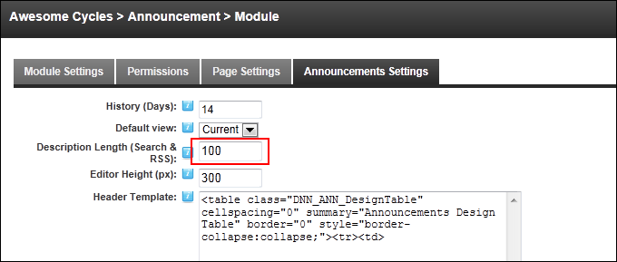

Setting the Description Length for Search and RSS
How to set the length of the description of an announcement on the Announcements module when it is used in DNN searches and in RSS feeds.
-
- Select the Announcements Settings tab.
- In the Description Length (Search & RSS) text box, enter the number of characters to be included - OR - Enter 0 (zero) to allow the maximum number of characters, which is 2000.

- Click the OK button to confirm.